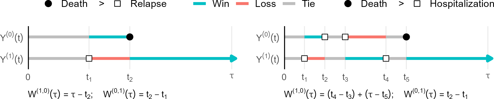
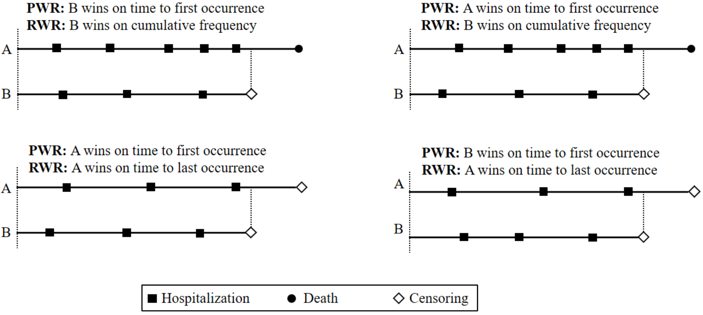

########################################
# 1. Two-sample RMT-IF
########################################
library(rmt)
obj <- rmtfit(id, time, status, trt,
type = "recurrent" # "recurrent" (default) or "multistate"
)
summary(obj, tau = 4) # Summarize effect sizes at restriction time 4
plot(obj) # RMT-IF curve
bouquet(obj) # Bouquet plotChapter 13 - Composite Endpoints
Slides
Lecture slides here. (To convert html to pdf, press E \(\to\) Print \(\to\) Destination: Save to pdf)
Chapter Summary
Composite endpoints combine fatal and nonfatal events, typically ranked by clinical importance, into a single outcome. They are especially useful in clinical trials for increasing statistical efficiency and avoiding multiple testing. Traditional methods such as time to first event can obscure the relative severity of outcomes. Newer techniques—such as restricted mean time in favor (RMT-IF) and the proportional win-fractions (PW) model—offer interpretable, flexible alternatives that respect the hierarchical structure of composite events.
Multistate outcome structure
Let \(Y_a(t)\) denote the clinical state of a subject in treatment arm \(a\) at time \(t\), taking values in the ordered set \(\{0, 1, \ldots, K, K+1\}\):
- \(a \in \{0, 1\}\): treatment assignment (0 = control, 1 = treatment),
- \(Y_a(t)\) increases as the subject’s health condition worsens,
- State \(K+1\) is an absorbing state corresponding to death.
Examples include:
Progressive disease (e.g., cancer): \(Y_a(t) = 0\): remission, \(1\): relapse, \(2\): metastasis, \(3\): death (\(K+1 = 3\)).
Recurrent hospitalizations with death:
\(Y_a(t)\) = number of hospitalizations up to \(t\) (0 to \(K\)), with \(K+1\) = death.
The process \(Y_a(t)\) is assumed to be progressive, i.e., non-decreasing over time, and all transitions eventually terminate in the absorbing state.
Restricted Mean Time in Favor (RMT-IF)
The RMT-IF measures the average duration over which a subject in one group is in a more favorable state than a subject in the other group, over a follow-up window \([0, \tau]\).
- Definition: \[ \theta(\tau) = E\Bigg[ \underbrace{\int_0^\tau I\{ Y_1(t) < Y_0(t)\} \mathrm{d} t}_{\text{Win time } W^{(1, 0)}(\tau)} \Bigg] - E\Bigg[ \underbrace{\int_0^\tau I\{ Y_0(t) < Y_1(t) \} \mathrm{d} t}_{\text{Loss time } W^{(0, 1)}(\tau)} \Bigg]. \]

Component-wise decomposition: \[ \theta(\tau) = \sum_{k=1}^{K+1} \theta_k(\tau), \] where each \(\theta_k(\tau)\) corresponds to a net gain in time prior to entering state \(k\).
Estimation: Uses Kaplan–Meier survival curves for \(T_{ak}\) = time to entry into state \(k\) or worse.
Interpretation: Reduces to RMST when only two states are considered (e.g., survival vs. death).
Regression: \[ g\{\theta(Z_i, Z_j)(\tau)\} = \beta_\tau^\mathrm{T}(Z_i - Z_j), \] where \(\theta(Z_i, Z_j)(\tau)\) is the conditional RMT-IF between covariate profiles \(Z_i\) and \(Z_j\).
Win Ratio and Proportional Win-Fractions (PW) Model
The win ratio compares all possible treatment–control subject pairs, assigning a “win” to the subject in the more favorable state based on a pre-specified hierarchical rule.
Basic win ratio: \[ \hat{\text{WR}} = \frac{\text{\# of treatment wins}}{\text{\# of control wins}}. \]
General win function \(\mathcal{W}(\mathcal{H}^*_i, \mathcal{H}^*_j)(t)\):
Compares cumulative histories \(\mathcal{H}^*(t)\) up to time \(t\) for two subjects, assigning 1 for a win and 0 otherwise.Examples:
- Pocock win ratio (PWR): prioritize survival first, then first nonfatal event.
- Recurrent win ratio (RWR): compare cumulative event counts and recency.
- Time to first event: inverse of hazard ratio.
- Binary response: reduces to odds ratio.

PW model: \[ \text{WR}(t; Z_i, Z_j) = \exp\left\{ \beta^\mathrm{T}(Z_i - Z_j) \right\}. \] This assumes proportional win fractions across time; \(\exp(\beta_j)\) gives the win ratio per unit increase in covariate \(j\).
Inference:
Estimation is performed via U-statistic–based pairwise comparisons and weighted logistic regression. Score processes are used for model checking.
Example R code
Here:
id: subject identifier;
time: time to event or censoring;
status: event type indicatortype = "recurrent":1: nonfatal event,2: death,0: censoring;
type = "multistate":k: a transition to state \(k\) (K+1for death,0for censoring)
trt: treatment group (0 = control, 1 = treatment);
########################################
# 2. Proportional Win-Fractions model
########################################
library(WR)
obj <- pwreg(ID, time, status, Z, strata = NULL)Here:
ID: subject identifier;
time: time to event or censoring;
status = 1: death,2: nonfatal event,0: censoring;
Z: matrix of baseline covariates;
strata: optional stratification variable.
Conclusion
RMT-IF and PW models provide robust, interpretable alternatives to traditional time-to-first-event analysis for composite endpoints. They respect the ordering of clinical priorities and utilize full patient histories, including both fatal and nonfatal events. RMT-IF summarizes effects in absolute time units, while PW models yield covariate-adjusted win ratios with a semiparametric interpretation. Together, they offer powerful tools for improving clinical trial analyses of complex outcomes.
R Code
Show the code
###############################################################################
# Chapter 13 R Code
#
# This script reproduces all major numerical results in Chapter 13, including:
# 1. RMT-IF analysis of the high-risk subgroup of the HF-ACTION study
# 2. Additional illustration with the WR package for heart failure data
###############################################################################
#==============================================================================
# (A) RMT-IF Analysis of the HF-ACTION Study (High-Risk Subgroup)
#==============================================================================
#------------------------------------------------------------------------------
# 1. Load Packages
#------------------------------------------------------------------------------
# install.packages("rmt")
library(rmt)
# The "hfaction" data is built into the {rmt} package
data("hfaction")
data <- hfaction
#------------------------------------------------------------------------------
# 2. Basic Data Summary
#------------------------------------------------------------------------------
# Sample size
uid <- unique(data$patid)
n <- length(uid)
# By treatment group
uid1 <- unique(data$patid[data$trt_ab == 1])
n1 <- length(uid1)
uid0 <- unique(data$patid[data$trt_ab == 0])
n0 <- length(uid0)
# Average # of hospitalizations by group
mean_hosp_1 <- sum(data$status[data$trt_ab == 1] == 1) / n1
mean_hosp_0 <- sum(data$status[data$trt_ab == 0] == 1) / n0
# Total # hospitalizations and # deaths
total_hosp <- sum(data$status == 1)
total_death <- sum(data$status == 2)
#------------------------------------------------------------------------------
# 3. Time-to-First-Event and Mortality Sub-Analyses
#------------------------------------------------------------------------------
library(survRM2)
# Create data for time to first event (TFE)
data.TFE <- data[!duplicated(data$patid), ]
# Create data for overall mortality (status==2 or 0)
data_death <- data[data$status == 2 | data$status == 0, ]
# RMST analysis for hospitalization-free survival & overall survival, up to ~4 years
rmst_tfe <- rmst2(data.TFE$time, data.TFE$status > 0, data.TFE$trt_ab, tau = 3.97)
rmst_death <- rmst2(data_death$time, data_death$status > 0, data_death$trt_ab, tau = 3.97)
#------------------------------------------------------------------------------
# 4. Kaplan-Meier Curves for Hospitalization-Free Survival and Overall Survival
#------------------------------------------------------------------------------
obj.TFE <- survfit(Surv(time, status > 0) ~ trt_ab, data = data.TFE)
obj.death <- survfit(Surv(time, status == 2) ~ trt_ab, data = data_death)
# Plot (Figure 13.1)
par(mfrow = c(1, 2))
# (A) TFE
plot(
obj.TFE,
main = "Hospitalization-free survival",
lty = 1:2,
ylab = "Survival probabilities",
xlab = "Time (years)",
lwd = 2
)
legend("bottomleft", c("Usual care", "Exercise training"), lwd = 2, lty = 1:2)
abline(v = 4, lty = 3, lwd = 2)
# (B) Overall survival
plot(
obj.death,
main = "Overall survival",
lty = 1:2,
ylab = "Survival probabilities",
xlab = "Time (years)",
lwd = 2
)
legend("bottomleft", lty = 1:2, c("Usual care", "Exercise training"), lwd = 2)
abline(v = 4, lty = 3, lwd = 2)
par(mfrow = c(1, 1))
#------------------------------------------------------------------------------
# 5. RMT-IF Analysis via rmtfit()
#------------------------------------------------------------------------------
# Here we treat the composite event as repeated events:
# status=1 => hospitalization, status=2 => death.
obj_rmt <- rmtfit(rec(patid, time, status) ~ trt_ab, data = data)
# Alternatively:
# obj_rmt <- rmtfit(id, time, status, trt, type = "recurrent")
summary(obj_rmt, Kmax = 1, tau = 3.97)
#------------------------------------------------------------------------------
# 6. Graphical Summaries of RMT-IF (Figure 13.2)
#------------------------------------------------------------------------------
par(mfrow = c(1, 2))
# (A) bouquet() with Kmax=4 => aggregated for k = 4,...,K
bouquet(
obj_rmt,
Kmax = 4,
cex.group= 1.0,
cex.lab = 1.5,
cex.axis = 1.5,
xlab = "Restricted mean win/loss time (years)",
ylab = "Follow-up time (years)",
group.label = FALSE,
ylim = c(0, 4.2)
)
text(-0.8, 4.15, "Usual care", cex = 1.2)
text( 0.8, 4.15, "Exercise training", cex = 1.2)
# (B) plot() for difference in RMT-IF (Exercise - Usual)
plot(
obj_rmt,
conf = TRUE,
lwd = 2,
cex.lab = 1.5,
cex.axis = 1.5,
xlab = "Follow-up time (years)",
ylab = "RMT-IF of training (years)",
main = ""
)
par(mfrow = c(1, 1))
#------------------------------------------------------------------------------
# 7. Creating a LaTeX-Style Table of Results
#------------------------------------------------------------------------------
pval_fmt3 <- function(x) {
if (x < 0.001) {
return("$<$0.001")
} else {
return(round(x, 3))
}
}
ltable <- NULL
# (A) k=1 => first events only
hosp_sum <- summary(obj_rmt, Kmax = 1, tau = 3.97)$tab
# (B) k=4 => aggregated for k=4,...,K
all_sum <- summary(obj_rmt, Kmax = 4, tau = 3.97)$tab
# First row => hospitalization
ltable <- c(
"&", "&", "&",
round(12 * hosp_sum[1, 1], 2),
"&", round(12 * hosp_sum[1, 2], 2),
"&", pval_fmt3(hosp_sum[1, 4]),
"\\"
)
# Next rows => k=1,...,6 (or re-labeled in loop)
for (i in 1:6) {
tmp <- c(
"&", i, "&&",
round(12 * all_sum[i, 1], 2), "&",
round(12 * all_sum[i, 2], 2), "&",
pval_fmt3(all_sum[i, 4]),
"\\"
)
ltable <- rbind(ltable, tmp)
}
# Adjust labeling
ltable[5, 2] <- "4+"
ltable[6:7, 2] <- ""
rownames(ltable) <- c("Hospitalization", "", "", "", "", "Death", "Overall")
noquote(ltable)
#==============================================================================
# (B) Additional Analysis with WR Package (Non-Ischemic HF Data)
#==============================================================================
# The real data used in Section 13.3 are protected. Below is a similar example
# from the {WR} package for HF-ACTION with 451 non-ischemic heart failure patients
#------------------------------------------------------------------------------
# 1. Load Package and Example Data
#------------------------------------------------------------------------------
# install.packages("WR")
library(WR)
# The "non_ischemic" dataset is built into {WR}
head(non_ischemic)
# Re-label the covariates with more informative names
colnames(non_ischemic)[4:16] <- c(
"Training vs Usual", "Age (year)", "Male vs Female", "Black vs White",
"Other vs White", "BMI", "LVEF", "Hypertension", "COPD", "Diabetes",
"ACE Inhibitor", "Beta Blocker", "Smoker"
)
# Sample size
length(unique(non_ischemic$ID))
# Median follow-up (in months) among those status < 2 (no event or non-fatal)
median(non_ischemic$time[non_ischemic$status < 2]) / 30.5
#------------------------------------------------------------------------------
# 2. Fit Pocock's Proportional Win-Fractions Regression Model
#------------------------------------------------------------------------------
nr <- nrow(non_ischemic)
p <- ncol(non_ischemic) - 3
ID <- non_ischemic[, "ID"]
time <- non_ischemic[, "time"]
status <- non_ischemic[, "status"]
Z <- as.matrix(non_ischemic[, 4:(3 + p)], nr, p)
pwreg.obj <- pwreg(ID = ID, time = time, status = status, Z = Z)
print(pwreg.obj)
#------------------------------------------------------------------------------
# 3. Hypothesis Testing for Race
#------------------------------------------------------------------------------
# Test H0: beta_4 = beta_5 = 0 for race (Black vs White, Other vs White)
beta_race <- matrix(pwreg.obj$beta[4:5])
Sigma_race<- pwreg.obj$Var[4:5, 4:5]
chistats <- t(beta_race) %*% solve(Sigma_race) %*% beta_race
1 - pchisq(chistats, df = 2)
#------------------------------------------------------------------------------
# 4. Standardized Score Processes
#------------------------------------------------------------------------------
score.obj <- score.proc(pwreg.obj)
print(score.obj)
oldpar <- par(mfrow = c(4, 4))
for (i in 1:13) {
plot(score.obj, k = i)
}
par(oldpar)